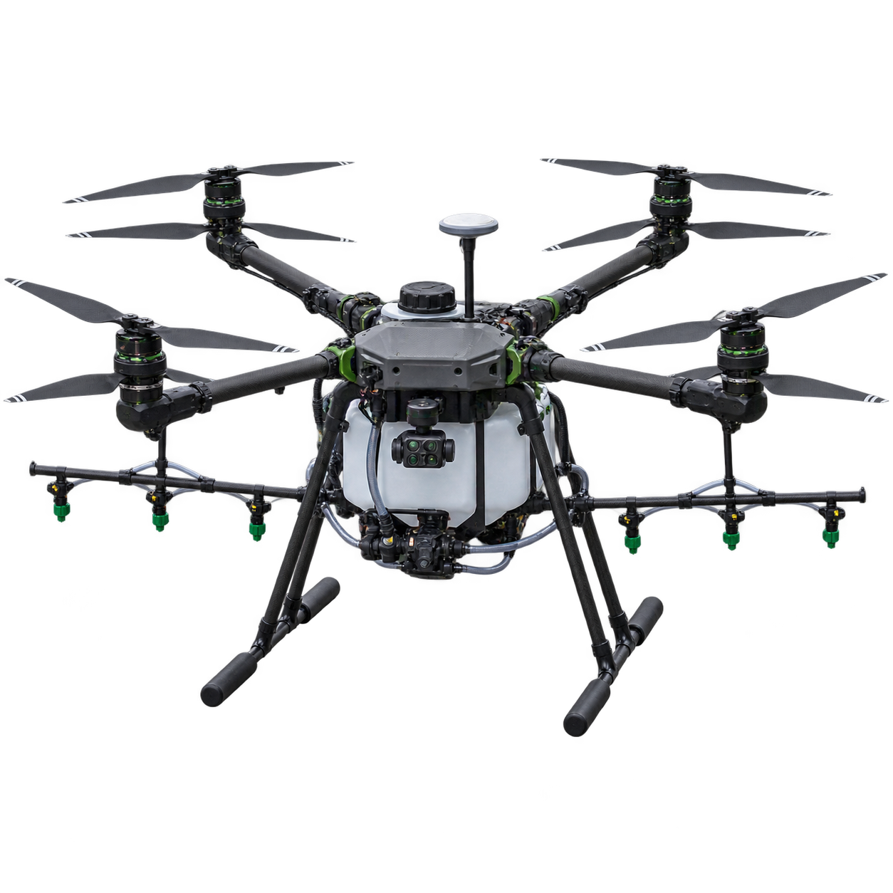
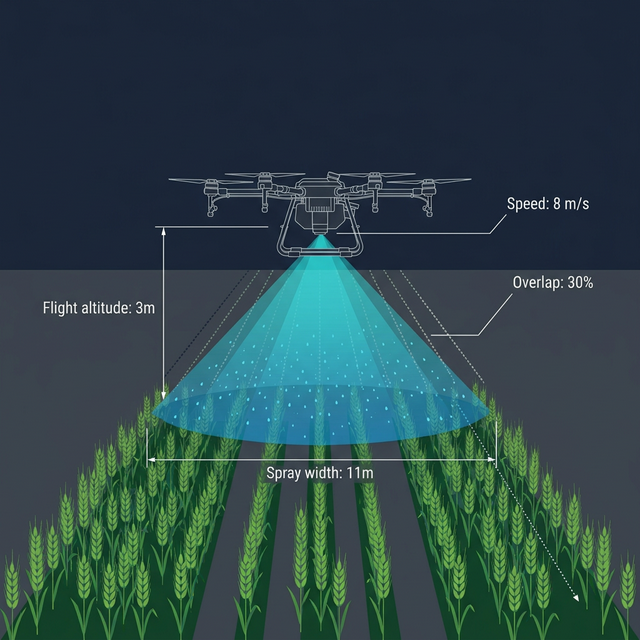
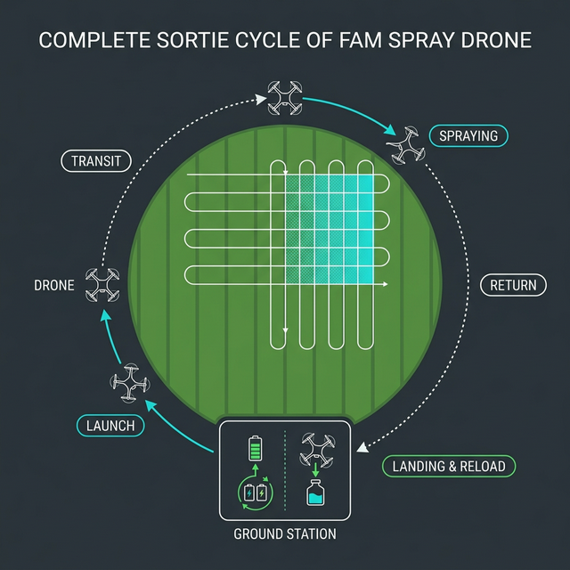
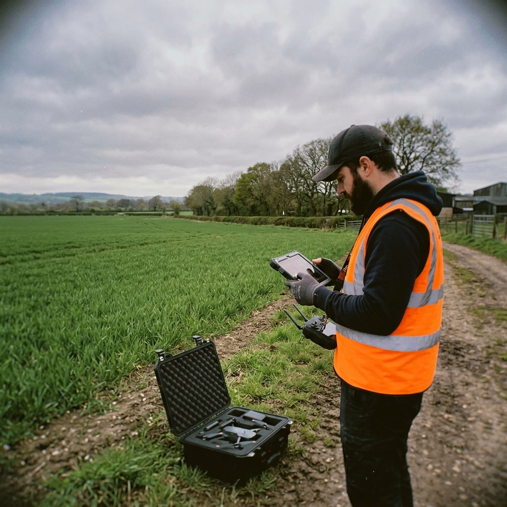
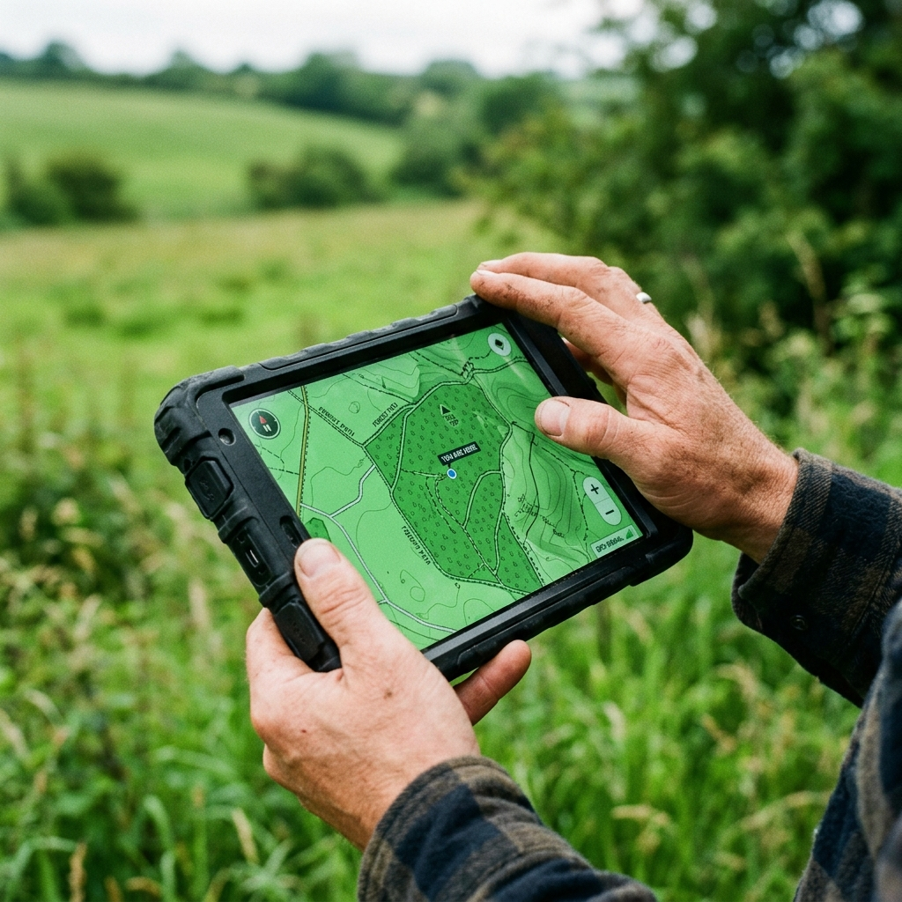

Three interfaces: a planner that turns a PDF prescription into 24 sorties, a night console for 12 aircraft, and a reload bay screen readable from three metres with gloves on. Built against a treatment window of 48 hours, of which roughly 31 are actually sprayable.

Agrodron Polska operates Poland's largest commercial drone fleet for precision agriculture. Their service: spray fungicides, herbicides, and foliar nutrients across cooperative farmland in Wielkopolska, the country's breadbasket.
The fleet had grown from 3 drones in 2022 to 12 by 2024. The software hadn't.
Operations were coordinated through a patchwork of DJI Terra, WhatsApp voice notes, handwritten field notebooks, and a shared Google Sheet cheerfully nicknamed "the Chaos Spreadsheet." The CTO called it "air traffic control by group chat."


The product gap was obvious to everyone except the budget committee: no single interface existed for planning a multi-drone mission, monitoring real-time operations, or managing ground station logistics.
Each interface was either built for a single drone (DJI), built for a different domain entirely (Google Sheets), or built for nobody in particular (WhatsApp). The team needed one cohesive system. They named the project after the Polish word różnica, "the difference", because that's what they wanted to make.
June 2024. Satellite imagery flagged Septoria tritici spreading across 6 cooperative wheat fields near Kalisz. The agronomist prescribed emergency fungicide treatment. The catch: Septoria has a 48-hour optimal treatment window. After that, yield losses compound exponentially.
Marek, the senior operator, attempted to coordinate the response using the existing tools.
The Kalisz incident became the founding artefact for ROJNICA. The board approved the project the following week. We joined two weeks later.
We spent three days embedded with the Agrodron team during a scheduled herbicide campaign. Mornings at the ground station. Afternoons in the field. Evenings transcribing notes while the drones charged.

Field visits are clarifying in a way that Zoom calls never are. You learn things like: the operator doesn't look at the screen for the first 45 seconds after launch. He watches the drone. With his eyes. Because he doesn't trust the telemetry yet.
You learn that the ground station technician (Jakub) has never used a mouse. He's been farming for 30 years and started the drone work 18 months ago. His interface is a tablet, used with gloves, in direct sunlight, while a drone lands 15 metres away.
Operators divide attention between the physical drone (eyes up) and the digital interface (eyes down). Any notification must survive this split. If it only exists on screen, it is invisible for up to 45 seconds.
Operators react to anomalies proportionally. A nozzle flow warning gets a glance. A GPS loss gets full attention. The interface should match this gradient, not treat every alert as a five-alarm fire.
Jakub needs the simplest interface of anyone, and his context is the most chaotic. Drones land, batteries swap, chemicals refill, all while a queue of incoming drones counts down. His UI must be scannable from 2 metres.
Mission planning happens in an office, on a desktop, with coffee. Fleet operations happen in a field, on a tablet, in the rain. These are not the same context, and they do not want the same UI.
The discovery findings led to an uncomfortable but necessary architectural decision: ROJNICA would be three separate interfaces optimized for three distinct contexts, connected by a shared data model.
Default state is minimal. Information escalates in tiers, not all at once. Green doesn't shout.
Every notification competes with a physical drone in the sky. Spend attention like money: sparingly.
No mission survives first contact with the field. Auto-reassignment is not a fallback; it is a primary feature.
Three users, three different needs, some directly contradictory:
The resolution: stratify by interface. Marek's dashboard gets the telemetry depth. Jakub's reload station gets the simplicity. The planner gets the planning. Nobody compromises on their core workflow.
The planner is a desktop-first application, light-themed, designed for the office environment where Marek prepares operations. It follows a three-step flow: Prescription → Fleet → Assignment.
The agronomist's prescription (field priorities, chemicals, urgency) loads into the left panel. The map renders field boundaries with priority-coded borders: red for urgent, amber for preventive, green for monitoring. No mystery colours. No legend required.
Tab two reveals the fleet in a 2-column grid. Available drones show battery, payload, and chemical assignment. Unavailable units (maintenance, charging) grey out with reason codes. No guesswork about why AG-08 isn't in the roster.
Chemical inventory sits below, not in a separate screen, not in a modal. Right there. Because Marek told us: "I've launched drones without checking chemical stock twice. Both times were bad."
The third tab is where the algorithm earns its keep. Click "Generate Plan" and ROJNICA assigns drones to fields, optimising for: priority (urgent fields first), proximity (minimize transit), battery efficiency (avoid mid-sortie returns), and chemical compatibility.
The result renders as colour-coded flight paths on the map and a Gantt chart at the bottom, every drone row showing its sortie sequence, reload gaps, and field assignments. The operator can read the entire 6-hour operation at a glance.
The dashboard is the centrepiece. Dark mode. Real-time. Designed to run on a large monitor at the ground station during active operations.
The core design philosophy: calm by default. When 10 drones are flying nominally, the screen is almost boring. Muted field outlines, small chevron markers drifting across the map, a green "ALL NOMINAL" badge so understated you barely notice it.
The escalation system has three tiers, each calibrated to the operator's real-world response gradient:
Log entry only. No visual change. "AG-07 completed sortie 2." The operator doesn't need to know this urgently. It's there when they check.
Amber card border. Pulsing map ring. Notification slides in from the right with context and two action buttons. "Crop stress detected in northeast sector of Pole Wschodnie." Operator decides: redirect or mark for follow-up.
Red card. Dashboard dims. Blinking map marker. Auto-return countdown begins. "AG-09: GPS LOST. Hovering at last known position." The operator has two choices: return now or hold position. Nothing else matters.
When a drone is withdrawn, GPS loss, mechanical failure, nozzle malfunction, its remaining hectares need redistribution. In the old system, this was a 14-minute WhatsApp scramble. In ROJNICA, it's a modal.
The replan modal shows the affected fields, the original paths (dashed), the proposed new paths (solid), and a table of reassignments with added time per drone. One button: approve. One button: modify. Average decision time in testing: 8 seconds.
Jakub's interface. Tablet-optimised. Dark mode for outdoor visibility. And the design constraint that made it interesting: 56-pixel minimum touch targets, because Jakub wears gloves.
The reload view is deliberately simple. An incoming drone queue with countdown timers. Each card shows what needsto happen: battery swap, chemical reload, nozzle check. A fat A single wide button to mark the bay ready. A recently-launched log at the bottom so he can confirm what he just sent back up.

The inventory gauges in the top bar are Jakub's only dashboard. Fungicide A level. Fungicide B level. Available batteries. That's it. He doesn't need to know about the agronomist's prescription or the overall field progress. His world is the landing pad, and the UI respects that boundary.
ROJNICA deployed for a pilot season covering two cooperative campaigns. The numbers told the story we hoped for, and one we didn't expect.
The real test came when Septoria returned to the Kalisz cooperative in the second campaign season. Same pathogen. Same 48-hour window. Same 2,760 hectares. Different outcome.
Marek loaded the prescription at 07:00. Generated the mission plan by 07:12. First drones launched at 07:30. AG-09 threw a nozzle warning at 09:15, Tier 2, handled in 12 seconds with a redirect to the nearest reload station. All six fields treated within 38 hours. Ten hours inside the window.
The offline resilience layer was under-specified. We designed for it but didn't prototype the local-first data sync thoroughly enough. When Jakub's tablet lost connectivity for 90 seconds during a reload cycle, the queue froze. Fixable, but should have been caught in testing.
What worked: the three-interface architecture. Separating planner, dashboard, and reload station into optimised contexts prevented the feature creep that makes agricultural software unusable. Jakub never had to see a Gantt chart. Marek never had to think about battery swap checklists. Each interface respected its user's attention budget.
What surprised us: the operators started using the Gantt chart for shift handovers. We hadn't designed for it, but the timeline view became a de facto briefing tool. Sometimes the best features are the ones you didn't intend.